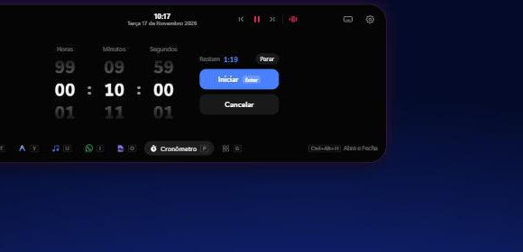
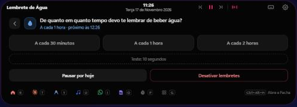

Hawk
HawkO notch que faltava
no seu Windows.
O Hawk é uma ilha no topo da tela, com dois olhos que seguem o seu mouse. Ele mostra a música, os timers, os lembretes e o que o Claude Code está fazendo, sem tirar você do que está fazendo.
7 dias de teste grátis · Windows 10 (1809 ou mais novo) e Windows 11
Tudo num toque no topo da tela
Abra e feche com Ctrl+Alt+T. Cada recurso tem atalho próprio, então dá para usar o Hawk sem tirar a mão do teclado.
Música
Controle o Spotify e outros players, veja a capa e mude o volume. Três visuais: Imersiva, Vinil e Onda.
Claude Code e Antigravity
Veja quando a IA está trabalhando, pedindo permissão ou terminou, e quantas tarefas ela fez hoje.
Cronômetro
Timer que fica contando no notch, com aviso quando acaba.
Lembrete de água
Avisos a cada 30 minutos, 1 hora ou 2 horas. Dá para pausar pelo resto do dia.
Notas e A fazer
Anotações rápidas e listas de tarefas sempre à mão.
Bluetooth e dispositivos
Volume, microfone mudo e a bateria dos seus fones e periféricos, direto no notch.
Mouse entre PCs
Use o mesmo mouse e teclado em dois computadores.
Do seu jeito
Tamanho, cores, bordas, modo claro e escuro, e o notch no topo ou embaixo da tela.
Veja o Hawk em ação



Olhos com personalidade
Os olhos reagem ao que acontece no seu PC: piscam, se assustam e comemoram. Além do estilo padrão, há 13 estilos para comprar e trocar quando quiser.
Preço justo, sem assinatura
Teste tudo de graça. Se gostar, pague uma vez e o Hawk é seu para sempre.
- Todos os recursos liberados
- Entre com e-mail ou Google
- Sem cartão para começar
- Licença vitalícia
- Todas as atualizações
- Ativa na hora pelo próprio app
- 13 estilos para escolher
- Veja a prévia no notch antes de comprar
- Ficam na sua conta para sempre
Pagamento seguro pelo Mercado Pago, com Pix, cartão de crédito ou saldo. A compra é feita dentro do Hawk.
Dúvidas
É assinatura?
Não. A licença custa R$ 29,90 uma vez só e vale para sempre. Os estilos de olhos também são compra única.
O Windows mostrou um aviso ao instalar. É seguro?
Sim. O Windows avisa sobre programas novos que ainda não têm assinatura digital. Clique em "Mais informações" e depois em "Executar assim mesmo".
Preciso criar uma conta?
Sim, para o teste e a licença ficarem ligados a você. Basta entrar com e-mail ou com sua conta Google. A licença vale na sua conta, mesmo se você reinstalar o Windows.
Como compro a licença ou um olho?
Dentro do Hawk, na janela Conta ou na tela de Olhos. O pagamento abre no Mercado Pago e, assim que for aprovado, o Hawk libera sozinho.
Posso pedir reembolso?
Sim, em até 7 dias depois da compra, sem precisar explicar o motivo. Escreva para assistentehawk@gmail.com. Os detalhes estão nos Termos.
Quais são os requisitos?
Windows 10 (versão 1809 ou mais nova) ou Windows 11, de 64 bits, e conexão com a internet para entrar na conta.